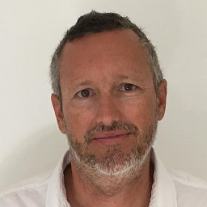
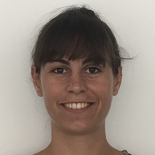
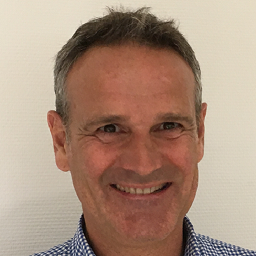
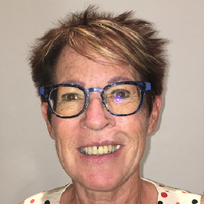

OLIVIER LESAGE
45 ans, Chef de projet
«Je suis fier de représenter l’union des écologistes au-delà des clivages gauchedroite.
L’écologie est l’affaire de tous, il s’agit de préserver notre avenir.
Nous ferons de Toulon une ville portant l’innovation et la transition écologique.
Notre programme, basé sur l’intérêt général et la lutte contre les pollutions, permet
une mutation vers un Toulon plus respectueux de l’environnement, de l’humain et
des animaux. Il permet une meilleure qualité de vie pour les Toulonnais.»

LESLIE ROS
25 ans, Ingénieure logiciel
« J’aime Toulon et je ferai de ma ville une cité performante. L’écologie moderne,
c’est aussi des projets et des emplois.
Faisons de Toulon une ville tournée vers les nouvelles technologies et l’éducation.
Nous soutiendrons dans notre ville le développement d’une filière complète portant
sur les énergies renouvelables.
Cette évolution vers un Toulon meilleur doit aussi passer par la défense de la cause
animale.»

EMMANUEL LE LOSTEC
52 ans, Responsable de formation
«Mon leitmotiv : Toulon ville propre ! Stop aux pollutions du quotidien.
Valorisons notre superbe environnement provençal en protégeant les territoires et
les espaces maritimes.
Lançons une dynamique culturelle et sportive digne de notre grande métropole.
Dotons notre police municipale de réels moyens humains et techniques.»

JACQUELINE CAVAREC
62 ans, Assistante pour les élèves
en situation d’handicap
«Je veux me sentir en sécurité à Toulon et pouvoir m’y déplacer facilement.
Nous mettrons en place d’un vrai plan de mobilité adapté à notre ville et à ses
habitants. Il prendra en compte aussi bien les actifs que les personnes âgées et à
mobilité réduite.
Nous généraliserons des menus bio dans les cantines scolaires dans le cadre d’une
économie de proximité solidaire et performante.»